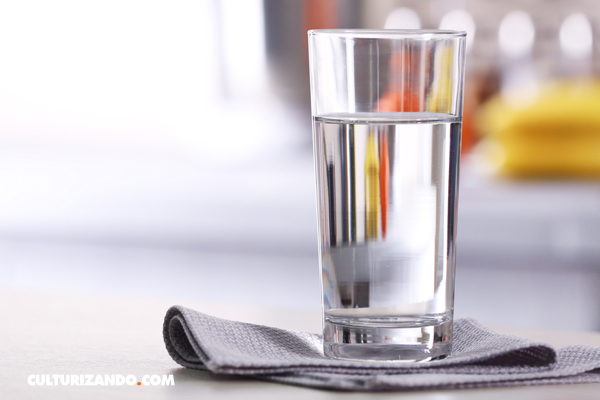
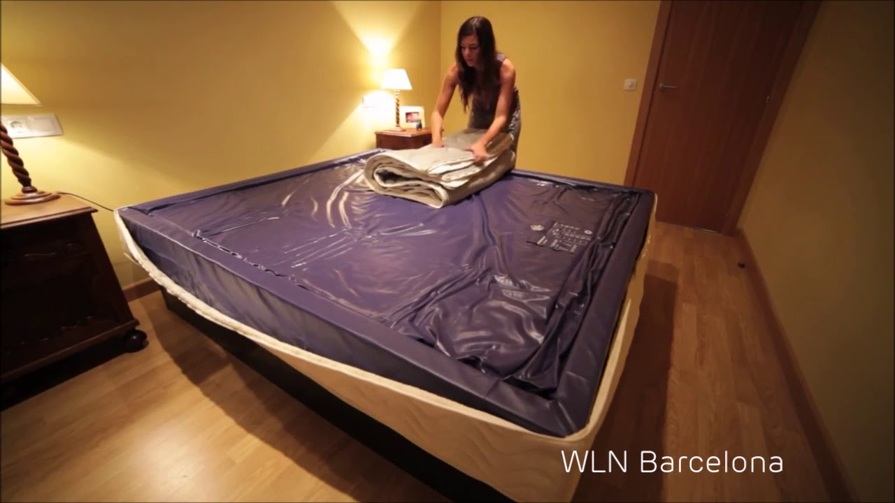

Água em Portugal
 Conselho Nacional da Água Bem-vindo Notícias Conselho Nacional da Água Natureza Constituição Funcionamento Legislação Atividades Publicações de acesso geral Livro CNA 20 anos Acesso restrito Planeamento Plano Nacional da Água Planos de recursos hídricos portugueses Planos de recursos hídricos espanhóis Reuniões plenárias Atas Documentos e apresentações Rios do futuro Grupos de Trabalho Água na Escola Água no Planeta Terra Água em Portugal O Ciclo da Água Propriedades da água Problemas e soluções Vídeos Música Espaço d'Arte Biblioteca Galeria História Sabias Que? Jogos Mostra que Sabes! Programas escolares Simulador da Pegada Hídrica Simulador das tarifas de água Contactos
Água em Portugal
Água doce disponívelPortugal tem escassos (e pequenos) lagos naturais, pelo que a maior parte da água doce disponível se encontra na precipitação, na que escoa superficialmente através dos rios, na que se infiltra (aquíferos) e na que está armazenada nas albufeiras.
A pateira de Fermentelos é a maior lagoa natural de Portugal, situando-se a cerca de 20 km da linha da costa, a montante da confluência do rio Cértima com o rio Águeda (bacia hidrográfica do rio Vouga). O cupa uma área de superfície e profundidade variáveis, de acordo com a estação do ano, atingindo no máximo uma área superior a 5 quilómetros quadrados , abarcando os concelhos de Águeda, Aveiro e Oliveira do Bairro.
Realça-se também a lagoa vulcânica das sete cidades, na ilha de S. Miguel, nos Açores. Esta lagoa constitui o maior reservatório natural de água doce superficial do arquipélago dos Açores e ocupa uma área que pode chegar aos 4,35 quilómetros quadrados. Caracteriza-se pela dupla coloração das suas águas, sendo dividida por um canal pouco profundo, atravessado por uma ponte baixa que separa de um lado uma massa de água de tom verde e, do outro, uma massa de água de tom azul. A distribuição da precipitação no território continental é bastante heterogénea. As regiões situadas a norte do rio Tejo têm precipitações anuais superiores à média do país, apresentando as regiões a sul valores inferiores. As bacias hidrográficas dos rios Minho e Lima apresentam os valores mais elevados de precipitação anual média (superiores a 2000 mm), enquanto a bacia hidrográfica do rio Guadiana tem o valor de precipitação anual média mais baixo, na ordem de 580 mm. Precipitação média anual (mm) no território continental português Escoamento anual na estação hidrométrica de Vale Giestoso, no rio Beça, afluente do rio Tâmega (bacia hidrográfica do rio Douro)
A precipitação média anual sobre as nove ilhas do Arquipélago dos Açores é de 1930 mm, valor bastante superior à média continental. A precipitação anual média na ilha da Madeira também é superior à média continental (1628 mm), mas é bastante inferior na ilha de Porto Santo (355 mm).
Além de variar ao longo do território português, a precipitação varia também de forma muito acentuada ao longo do ano (variação intra-anual ou sazonal), concentrando-se grande parte da precipitação num semestre mais húmido.
Os diferentes valores de precipitação condicionam a ocorrência de distintos valores de escoamento superficial no território português, com um padrão de variação espacial e temporal que copia, no essencial, a forma como a precipitação varia.
A precipitação e o escoamento são também bastante irregulares entre diferentes anos (variação inter-anual), registando-se a ocorrência de anos secos e anos húmidos. Esta irregularidade aumenta no território continental de Norte para Sul.
Quão húmida é a tua região?
Os recursos hídricos que estão disponíveis nas diferentes bacias hidrográficas portuguesas podem ser consultados nos Planos de Recursos Hídricos em vigor, no sítio da Agência Portuguesa do Ambiente .
Proporção dos volumes consumidos em Portugal continental por área de atividade.
Relevância da água
Como em muitas outras zonas do Mundo, as principais utilizações da água em Portugal incluem o abastecimento às populações , a agricultura (rega e abeberamento animal) e a utilização industrial , enquanto utilizações consumtivas, e a produção hidroelétrica, enquanto utilização não consumtiva. Diariamente são utilizados em Portugal continental 13,4 hectómetros cúbicos (na agricultura, no abastecimento urbano e na industria), o equivalente à água armazenada em mais de 5000 piscinas olímpicas. Devem ainda salientar-se os ecossistemas aquáticos portugueses, nomeadamente os rios, pelos serviços ambientais que prestam e pela importante biodiversidade que albergam, muitas vezes representada por espécies que existem apenas na Península Ibérica. Abastecimento e saneamento
O abastecimento de água e o saneamento de águas residuais registaram em Portugal uma clara evolução nos níveis de atendimento e nos indicadores de qualidade, em associação com o significativo investimento feito desde o início da década de 90 do Século XX.
Esta evolução permitiu que Portugal melhorasse vários indicadores de qualidade ambiental, nomeadamente relacionados com a qualidade das águas balneares.
Proporção (%) das zonas balneares costeiras com diferentes qualidades. A classe de qualidade, “pelo menos suficiente” também inclui as águas balneares excelentes, pelo que a soma das diferentes classes não é 100%. Mais informação sobre os serviços de abastecimento e saneamento de cada concelho pode ser obtida no sítio da Entidade Reguladora dos Serviços de Águas e Resíduos . Podes por exemplo saber qual a qualidade da água de abastecimento no teu concelho . Central hidroelétrica do antigo aproveitamento do Lindoso, no rio Lima, completada em 1922. Este aproveitamento foi entretanto substituído pelo aproveitamento do Alto Lindoso. Hidroeletricidade e regadio
A produção hidroelétrica e a agricultura são as atividades económicas que em Portugal utilizam maiores volumes de água, embora somente a agricultura consuma a água captada.
A produção de alimentos e de hidroeletricidade, com base num recurso renovável como a água, são importante na redução das importações (de alimentos e de combustíveis fósseis), na dinamização da economia e na segurança alimentar e energética do território português. Não obstante, estas duas atividades polarizam opiniões quanto à forma como interagem com os valores ecológicos presentes nos recursos hídricos.
A água dos rios é utilizada para gerar eletricidade em Portugal há mais de um Século (a primeira central hidroelétrica entrou em exploração em 1894 no rio Corgo, bacia hidrográfica do rio Douro). Atualmente e num ano com precipitação média, 30% da eletricidade consumida em Portugal tem origem hidroelétrica. Esta proporção é naturalmente inferior em anos secos.
Na agricultura, a disponibilidade de água é fundamental nas condições climáticas portuguesas, já que as plantas têm frequentemente pouca água disponível no solo nos períodos potenciais de maiores necessidades hídricas (maior crescimento vegetativo, com mais luz e calor). Consequentemente, a prática do regadio é muito antiga em Portugal, registando-se a existência de alguns açudes de origem romana que, entre outros fins, se destinavam a armazenar água para rega. Rega gota-a-gota. As técnicas de regadio mais eficientes distribuem a água em pressão e são cada vez mais empregues em Portugal, representando já quase 70% do total do regadio feito nos aproveitamentos hidroagrícolas. Embora a área irrigada tenha decrescido nos últimos anos em Portugal, cada vez mais agricultores aderem a esta forma de produção, podendo ainda destacar-se a evolução recente de aproveitamentos hidroagrícolas modernos e eficiente, como o empreendimento de fins múltiplos de Alqueva .
A Direção Geral de Agricultura e Desenvolvimento Rural (DGADR) é a instituição que regula a agricultura de regadio em Portugal e no seu sítio podem ser encontradas mais informações sobre esta atividade. Fenómenos extremos (secas e cheias)
Os fenómenos hidrológicos extremos incluem acontecimentos como as cheias e as secas, estando fortemente ligados à variabilidade natural da precipitação que cai no território português.
As cheias representam uma acentuada subida do nível da água num curso de água, lago, albufeira ou região costeira, enquanto as secas são períodos em que os níveis de água superficial, do solo e dos aquíferos diminuem, não permitindo satisfazer as necessidades das plantas, animais e seres humanos.
A seca começa sempre por ser meteorológica, sendo caracterizada por ocorrências de valores de precipitação anormalmente reduzidos. Posteriormente e se a precipitação se mantiver baixa, a seca passa a ser hidrológica, apresentando reflexos no ramo terrestre do ciclo hidrológico (menor humidade no solo, menor escoamento superficial, menores volumes armazenados nos aquíferos e em albufeiras).
As cheias e as secas ocorrem com frequência em Portugal, face às características do clima, e tenderão a ser mais frequentes num cenário de alterações climáticas.
A ocorrência de cheias e de secas acarreta impactos, por vezes catastróficos, exigindo uma atuação que previna e que remedeie os seus efeitos. A prevenção dos efeitos da seca engloba, por exemplo, o armazenamento de água nos períodos húmidos para sua utilização nos períodos secos, a utilização de culturas mais eficientes no uso da água e a gestão da procura de água, enquanto nas cheias envolve a não construção de habitações em zonas inundáveis.
Mais informação sobre cheias e secas em Portugal pode ser consultada no Sistema Nacional de Informação de Recursos Hídricos (SNIRH) e nos sítios do Instituto Português do Mar e da Atmosfera e da Autoridade Nacional de Proteção Civil . Planeamento de recursos hídricos e relações com Espanha
A utilização sustentável dos recursos hídricos implica que a mesma seja planeada face às disponibilidades e às utilizações, existentes e previstas, incluindo usos prioritários e as necessidades ambientais dos ecossistemas aquáticos e ribeirinhos.
Portugal apresenta bastante experiência na elaboração de planos de recursos hídricos, podendo os planos mais recentes em vigor (Planos de Gestão de Região Hidrográfica [1] , PGRH) ser consultados no sítio da Agência Portuguesa do Ambiente .
Uma Região Hidrográfica é área de terra e de mar constituída por uma ou mais bacias hidrográficas contíguas e pelas águas subterrâneas e costeiras que lhes estão associadas, constituindo-se como a principal unidade para a gestão das bacias hidrográficas.
Em Portugal estão definidas 10 Regiões Hidrográficas.
Os PGRH foram legalmente instituídos numa Diretiva comunitária publicada em 2000, a Diretiva-Quadro da Água , que estabeleceu um quadro de ação no domínio da política da água. A legislação ambiental portuguesa passou a ser fortemente influenciada pelas Diretivas europeias desde o Ato Único Europeu de 1986, que tornou o ambiente uma política comunitária. Além dos planos elaborados com base na bacia hidrográfica, Portugal possui também um plano de recursos hídricos de nível nacional, o Plano Nacional da Água. Este documento, de natureza estratégica, define as grandes opções da política nacional da água a partir da identificação dos principais problemas.
Porque a maior parte do território continental português é ocupado por bacias hidrográficas partilhadas com Espanha, as relações bilaterais no domínio dos recursos hídricos entre os dois países ibéricos são antigas, tendo pela primeira vez sido estabelecidas no Tratado dos Limites de 1864.
Presentemente, as relações entre Portugal e Espanha no domínio da água são reguladas pela Convenção sobre Cooperação para a Proteção e o Aproveitamento Sustentável das Águas das Bacias Hidrográficas Luso-Espanholas de 1998, mais conhecida por Convenção de Albufeira. Com o objetivo de garantir caudais ambientais mínimos na parte portuguesa dos rios luso-espanhóis, a Convenção fixou caudais mínimos anuais a libertar por Espanha. Em 2008 foi aprovada uma emenda à Convenção de Albufeira que estabeleceu caudais mínimos mensais.
Mais informação sobre a Convenção de Albufeira pode ser consultada na página da Comissão para o Acompanhamento e Desenvolvimento da Convenção de Albufeira . Pegada Hídrica portuguesa
A contabilidade tradicional do consumo de água foca-se no seu uso direto, nomeadamente para abastecimento doméstico.
No entanto, o consumo efetivo de água duma sociedade é bastante superior, por via da água utilizada na produção dos bens e serviços que consumimos.
Por este motivo foi desenvolvido o indicador “pegada hídrica”, que expressa o volume total de água doce utilizado para produzir os bens e serviços consumidos por uma pessoa, comunidade, País ou humanidade.
A pegada hídrica engloba duas componentes: uma relacionada com o uso direto de água por um determinado consumidor (por exemplo, a água bebida) ou produtor (por exemplo, a água que um agricultor utiliza para regar) e outra associada ao uso indireto, feito através da água incorporada nos produtos e serviços utilizados pelo consumidor ou produtor.
A água necessária para produzir as refeições que comemos ou para fabricar as roupas que usamos é assim incorporada na pegada hídrica. Um bife, por exemplo, requereu a água necessária para produzir os cereais utilizados na alimentação dos animais e no processamento dos animais e da carne no matadouro. Em conjunto com um pão, batatas fritas e um refrigerante, esta refeição pode ter utilizado mais de 5500 l de água, o suficiente para encher uma pequena piscina.
E em relação às roupas que vestimos? A produção do algodão necessário para um par de jeans e para uma camisa, bem como o processamento necessário ao fabrico do vestuário, necessitaram de cerca de 10000 l de água.
A pegada hídrica permite também que a água utilizada na produção de produtos importados seja incorporada no seu cálculo, o que não aconteceria num balanço hídrico tradicional. A pegada hídrica é ainda desagregada nas seguintes componentes: água verde (chuva que cai sobre o solo e que não escoa para os rios nem recarrega os aquíferos), água azul (existente nos rios, lagos, albufeiras e aquíferos) e água cinzenta (necessária para diluir as concentrações de poluentes tendo em conta as concentrações naturais e os limites de qualidade estabelecidos na legislação). Análises da pegada hídrica portuguesa revelaram o forte peso do sector agrícola na pegada total e uma elevada participação da água utilizada fora do País, já que muitos dos produtos que consumimos, nomeadamente agrícolas, são importados.
A pegada hídrica portuguesa foi estimada em mais de 2000 metros cúbicos/pessoa/ano Estuários e zonas costeiras
Portugal tem quase 1000 km de extensão de costa e uma população e economia concentradas nos concelhos costeiros (75% da população e 85% do Produto Interno Bruto). Se por um lado esta realidade reflete as elevadas potencialidades do litoral português, por outro traduz-se numa forte ocupação desta zona naturalmente dinâmica.
Apesar da excelente qualidade da maioria das nossas zonas balneares, a zona costeira ( genericamente definida como a região onde os processos marinhos e terrestres interagem) portuguesa apresenta vulnerabilidades ligadas à erosão (cerca de 25% da extensão costeira é afetada por erosão costeira e 67% dessa extensão apresenta risco potencial de perda de território), que deverão aumentar com as alterações climáticas. A atuação sobre o litoral português tem sido enquadrada por várias estratégias e planos, sendo que a resolução dos problemas existentes tornará necessário ponderar novos fatores de risco e novas formas de gestão da ocupação humana.
Os estuários (ou águas de transição) apresentam várias dimensões comuns à zona costeira (grande dinâmica natural e forte pressão de utilização), representando importantes ecossistemas de transição entre os sistemas fluviais e marinhos. Qual é o estado dos nossos recursos hídricos?
O conhecimento do estado dos recursos hídricos é fundamental para que se possa fazer a sua gestão sustentável. Para esse fim, a quantidade e qualidade dos recursos hídricos superficiais e subterrâneos são monitorizadas regularmente em vários locais do território português.
A quantidade da água escoada num rio é avaliada em estações udométricas , enquanto o nível de água armazenada nos aquíferos é medido em piezómetros. Outras informações importantes na avaliação da água disponível, nomeadamente as relativas à precipitação, são obtidas nas estações meteorológicas. Mais informações sobre estas questões podem ser obtidas aqui .
Os valores obtidos nas estações de monitorização são registados em bases de dados e utilizados posteriormente no planeamento e gestão da água. A informação obtida nas redes de monitorização existentes nos rios, albufeiras e aquíferos pode ser consultada no SNIRH .
A qualidade dos recursos hídricos nas origens de água também é monitorizada no território. A avaliação da qualidade dos rios e albufeiras passou a incluir desde 2000, não apenas parâmetros físico-químicos, mas também características físicas do leito dos rios e albufeiras e elementos biológicos, como os peixes e o fitoplâncton. A utilização conjugada de todos estes elementos e parâmetros permite avaliar o estado dos recursos hídricos.
Como é avaliado o estado dos recursos hídricos portugueses na origem?
A qualidade dos recursos hídricos superficiais nas origens de água, como rios e albufeiras, é avaliada através da determinação do estado ecológico e químico.
O estado ecológico expressa a qualidade dos ecossistemas aquáticos e avalia o desvio existente entre as condições observadas e as que existiriam caso não existisse qualquer actividade humana.
O estado ecológico é avaliado através de indicadores ecológicos (por exemplo os peixes) que medem esse desvio.
Quanto maior for o desvio, menor é o estado ecológico e, assim, a qualidade do local. Encontram-se estabelecidas cinco classes de estado ecológico: mau (quando o desvio é máximo), medíocre, razoável, bom e excelente (quando o desvio é mínimo), que são representadas por cores. Esquema da resposta do Estado ecológico a aumentos da ação do homem.
A qualidade da água de abastecimento é também monitorizada regularmente, garantindo a sua boa qualidade. A informação sobre a qualidade da água de abastecimento em cada concelho pode ser consultada no sítio da ERSAR .
Com base na informação mais recente, disponibilizada nos Planos de Gestão de Região Hidrográfica , 57% dos corpos de água existentes em rios de Portugal continental apresentam uma qualidade (estado ecológico) boa ou mesmo excelente, enquanto 43% não cumprem ainda os patamares de qualidade . Cerca de metade das albufeiras não alcançam os patamares de qualidade, enquanto no caso dos estuários e sobretudo das águas costeiras, uma larga maioria apresenta bons indicadores de qualidade ecológica. Este padrão geral apresenta algumas diferenças em regiões hidrográficas particulares. Informação detalhada para cada Região Hidrográfica pode ser consultada no sítio da Agência Portuguesa do Ambiente.
Para os corpos de água com qualidade insuficiente, os principais impactos identificados são o enriquecimento em nutrientes (eutrofização) e orgânico, associado a pressões qualitativas. São ainda de realçar nos rios as alterações dos habitats aquáticos e ribeirinhos promovidas pelas pressões hidromorfológicas.
O que são pressões?
As pressões são consequências de atividades humanas com reflexos negativos na quantidade e/ou qualidade dos recursos hídricos. São geralmente divididas em quatro tipos: pressões qualitativas (que se relacionam com a ausência de tratamento de águas residuais de diversas atividades e com a drenagem de áreas agrícolas), pressões quantitativas (que se relacionam com as atividades que extraem água), pressões hidromorfológicas (que se relacionam com ações que alteram as características físicas das áreas de drenagem, dos leitos e das margens dos corpos de água, como a construção de barragens) e as pressões biológicas (que se relacionam com atividades como a pesca excessiva ou a introdução de espécies exóticas).
A implementação de atividades que possam aumentar as pressões existentes sobre os recursos hídricos pode acontecer em situações de compromisso bem definidas na legislação portuguesa (Lei da Água) e europeia (Diretiva-Quadro da Água). A avaliação da compatibilidade das atividades humanas projetadas com os vários requisitos legais é realizada no âmbito da Avaliação de Impacte Ambiental.
Conselho Nacional da Água
Rua de O Século, n.º 51, 1.º
1200-433 Lisboa Bem-vindo Notícias Conselho Nacional da Água Natureza Constituição Funcionamento Legislação Atividades Publicações de acesso geral Livro CNA 20 anos Acesso restrito Planeamento Plano Nacional da Água Planos de recursos hídricos portugueses Planos de recursos hídricos espanhóis Reuniões plenárias Atas Documentos e apresentações Rios do futuro Grupos de Trabalho Água na Escola Água no Planeta Terra Água em Portugal O Ciclo da Água Propriedades da água Problemas e soluções Vídeos Música Espaço d'Arte Biblioteca Galeria História Sabias Que? Jogos Mostra que Sabes! Programas escolares Simulador da Pegada Hídrica Simulador das tarifas de água Contactos
